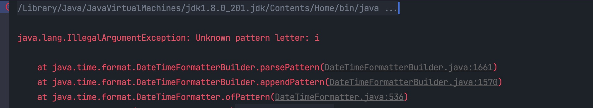

java.util.Date 、java.util.Calendar、java.text.SimpleDateFormat 这三个类是 Java用于处理日期、日历、日期时间格式化的。由于他们存在一些问题，诸如：
线程不安全：java.util.Date 和 java.util.Calendar 线程不安全，java.text.SimpleDateFormat 也是线程不安全的，这可能导致性能问题和日期格式化错误。
可变性：java.util.Date类是可变的，这意味着我们可以随时修改它，如果一不小心就会导致数据不一致问题。
时区处理困难：Java 8 版本以前的日期 API 在时区处理上存在问题，例如时区转换和夏令时处理不够灵活和准确。而且时区信息在 Date 对象中存储不明确，这使得正确处理时区变得复杂。
设计不佳：java.util.Date 的默认日期年竟然是从 1900 开始，月从1开始，日从1开始，没有统一性。而且 java.util.Date 类也缺少直接操作日期的相关方法；日期和时间处理通常需要大量的样板代码，使得代码变得冗长和难以维护。
基于上述原因，Java 8重新设计了日期时间 API，以提供更好的性能、可读性和可用性，同时解决了这些问题，使得在 Java 中处理日期和时间变得更加方便和可靠。相比Java 8 之前的版本，Java 8 版本的日期时间 API 具有如下几个优点：
不可变性（Immutability）：Java 8的日期时间类（如LocalDate、LocalTime和LocalDateTime）都是不可变的，一旦创建就不能被修改。这确保了线程安全，避免了并发问题。
清晰的API设计：Java 8 的日期时间 API 采用了更清晰、更一致的设计，相比于以前版本的 Date 和 Calendar 更易于理解和使用。而且它们还提供了丰富的方法来执行日期和时间的各种操作，如加减、比较、格式化等。
本地化支持：Java 8 的日期时间 API 支持本地化，可以轻松处理不同地区和语言的日期和时间格式。它们能够自动适应不同的时区和夏令时规则。
新的时区处理：Java 8引入了 ZoneId 和 ZoneOffset 等新的时区类，使时区处理更加精确和灵活。这有助于解决以前版本中时区处理的问题。
新的格式化API：Java 8引入了 DateTimeFormatter 类，用于格式化和解析日期和时间，支持自定义格式和本地化。这提供了更强大和灵活的格式化选项。
更好的性能：Java 8 的日期时间API 比以前的API 性能更佳。
Instant 用于表示时间线上的点，即一个瞬间。它是不可变的，以纳秒为单位精确表示时间，可以用于在不考虑时区的情况下进行时间的计算和比较。
Instant 参考点是标准的 Java 纪元（epoch），即1970-01-01T00：00：00Z（1970年1月1日00:00 GMT）。 Instant 类的 EPOCH 属性返回表示 Java 纪元的 Instant 实例。 在纪元之后的时间是正值，而在此之前的时间即是负值。
使用 Instant.now() 创建当前的时间点：getEpochSecond() 返回自纪元以来经过的秒数。 getNano() 返回自上一秒开始以来的纳秒数。
1Instant now = Instant.now();从 java.util.Date 或 java.util.Calendar 转换为 Instant
11Instant instant = new Date().toInstant();Instant 在以下场景特别有用：
计算事件发生的时间戳，无论时区如何。
进行时间计算，如计算时间差、定时任务等。
x1public class InstantTest {2
3 4 public void test() {5
6 Instant start = Instant.now();7
8 // do something here9
10 Instant end = Instant.now();11
12 System.out.println(Duration.between(start, end).toMillis());13 }14
15}LocalDate 用于表示不包含时间信息的日期。它是不可变的。
Java 提供了三种方式用来创建一个 LocalDate 对象。
91// 方式1 现在2LocalDate currentDate = LocalDate.now();3
4// 方式2 定年、月、日5LocalDate date = LocalDate.of(2023, 10, 8)6
7// 方式3 DateTimeFormatter 解析一个 LocalDate 对象8DateTimeFormatter formatter = DateTimeFormatter.ofPattern("yyyy-MM-dd");9LocalDate parsedDate = LocalDate.parse("2023-10-08", formatter);LocalDate 提供了 plus 和 minus 类方法用于在日期上增加或者减少一定数量的年、月、日：
plusYears()、plusMonths() 和 plusDays()：分别用于在日期上增加年、月和日。
minusYears()、minusMonths() 和 minusDays()：分别用于从日期中减去年、月和日。
这 6 个方法都是返回一个新的 LocalDate 对象，原始 LocalDate 对象不受影响。
281public void test() {3 LocalDate localDate = LocalDate.now();4 LocalDate plusYears = localDate.plusYears(1);5 LocalDate plusMonths = localDate.plusMonths(1);6 LocalDate plusDays = localDate.plusDays(1);7
8 LocalDate minusYears = localDate.minusYears(1);9 LocalDate minusMonths = localDate.minusMonths(1);10 LocalDate minusDays = localDate.minusDays(1);11
12 System.out.println("原始 LocalDate：" + localDate);13 System.out.println("plusYears(1)：" + plusYears);14 System.out.println("plusMonths(1)：" + plusMonths);15 System.out.println("plusDays(1)：" + plusDays);16 System.out.println("minusYears(1)：" + minusYears);17 System.out.println("minusMonths(1)：" + minusMonths);18 System.out.println("minusDays(1)：" + minusDays);19}20
21// 结果......22原始 LocalDate：2023-10-0823plusYears(1)：2024-10-0824plusMonths(1)：2023-11-0825plusDays(1)：2023-10-0926minusYears(1)：2022-10-0827minusMonths(1)：2023-09-0828minusDays(1)：2023-10-07LocalDate 提供了 get 类方法用于获取日期信息：
getYear()：获取年份。
getMonth()：获取月份（返回Month枚举类型）。
getDayOfMonth()：获取月中的天数。
getDayOfWeek()：获取星期几（返回DayOfWeek枚举类型）。
151public void test() {3 LocalDate localDate = LocalDate.now();4 System.out.println("getYear()：" + localDate.getYear());5 System.out.println("getMonthValue()：" + localDate.getMonthValue());6 System.out.println("getDayOfMonth()：" + localDate.getDayOfMonth());7 System.out.println("getDayOfWeek()：" + localDate.getDayOfWeek());8}9
10// 结果......11getYear()：202312getMonthValue()：1013getDayOfMonth()：814getDayOfWeek()：SUNDAY15
LocalDate 提供了 with 类方法用于修改 LocalDate 对象，它返回的也是一个新的 LocalDate 对象。
withDayOfMonth()：修改月中的天数字段
withMonth()：修改月份字段
withYear()：修改年份字段
181public void test() {3 LocalDate localDate = LocalDate.now();4 LocalDate withYear = localDate.withYear(2022);5 LocalDate withMonth = localDate.withMonth(12);6 LocalDate withDayOfMonth = localDate.withDayOfMonth(22);7
8 System.out.println("原始 localDate：" + localDate);9 System.out.println("withYear(2022)：" + withYear);10 System.out.println("withMonth(12)：" + withMonth);11 System.out.println("withDayOfMonth(22)：" + withDayOfMonth);12}13
14// 结果......15原始 localDate：2023-10-0816withYear(2022)：2022-10-0817withMonth(12)：2023-12-0818withDayOfMonth(22)：2023-10-22设置的值的时候注意时间范围，你别
withDayOfMonth(99)肯定报异常。
Period 是用于处理日期间隔的类，通常用于计算两个日期之间的间隔，如天数、月数和年数。
Period.of() 用于创建一个表示日期间隔的 Period 对象，该方法接受三个参数：年、月、日：
11Period period = Period.of(5,10,8); 同时，Period 也提供了对应的 get 方法用于获取间隔的年、月、日，对应的方法分别为 getYears()、getMonths()、getDays()：
71public void test() {3 Period period = Period.of(5,10,8);4 int years = period.getYears();5 int months = period.getMonths();6 int days = period.getDays();7} Period 提供的 between() 用于计算两个日期之间的间隔：
151 2 public void test() {3 LocalDate begin = LocalDate.of(2023,10,8);4 LocalDate end = LocalDate.of(2025,9,12);5 6 Period period = Period.between(begin,end);7 System.out.println("years：" + period.getYears());8 System.out.println("getMonths：" + period.getMonths());9 System.out.println("getDays：" + period.getDays());10 }11
12// 结果......13years：114getMonths：1115getDays：4 Period.between() 返回的是一个 Period 对象，我们可以利用对应的 get 方法获取相应的数据。
LocalTime 用于不包含日期信息的时间，它只表示一天中的时间。
LocalTime 提供了四种方式来创建 LocalTime 对象。
LocalTime.now()：获取当前系统时间。
11LocalTime localTime = LocalTime.now(); //11:44:47.123LocalTime.of(int hour, int minute)：创建指定的小时和分钟的时间
11LocalTime localTime = LocalTime.of(12,46); //12:46LocalTime.of(int hour, int minute, int second)：创建指定的小时、分钟和秒的时间。
11LocalTime localTime = LocalTime.of(12,46,50); //12:46:50LocalTime.of(int hour, int minute, int second, int nanoOfSecond)：创建指定的小时、分钟、秒和纳秒的时间。
11LocalTime localTime = LocalTime.of(12,46,50,500000000); // 12:46:50.500LocalTime 和 LocalDate 提供的方法都差不多，plus 增加时分秒、minus 减少时分秒，get 获取时分秒，with 修改时分秒，同时 LocalTime 也是不变的，所以也是线程安全的。
LocalTime 提供了 plus 和 minus 类型方法用于对时间进行加减操作。
plusHours()、plusMinutes()、plusSeconds()：分别用于在时间上增加时、分、秒。
minusHours()、minusMinutes()、minusSeconds()：分别用于在时间上减少时、分、秒。
261public void test() {3 LocalTime localTime = LocalTime.now();4 LocalTime plusHours = localTime.plusHours(1);5 LocalTime plusMinutes = localTime.plusMinutes(1);6 LocalTime plusSeconds = localTime.plusSeconds(1);7 LocalTime minusHours = localTime.minusHours(1);8 LocalTime minusMinutes = localTime.minusMinutes(1);9 LocalTime minusSeconds = localTime.minusSeconds(1);10
11 System.out.println("localTime：" + localTime);12 System.out.println("plusHours(1)：" + plusHours);13 System.out.println("plusMinutes(1)：" + plusMinutes);14 System.out.println("plusSeconds(1)：" + plusSeconds);15 System.out.println("minusHours(1)：" + minusHours);16 System.out.println("minusMinutes(1)：" + minusMinutes);17 System.out.println("minusSeconds(1)：" + minusSeconds);18}19// 结果......20localTime：15:40:01.16021plusHours(1)：16:40:01.16022plusMinutes(1)：15:41:01.16023plusSeconds(1)：15:40:02.16024minusHours(1)：14:40:01.16025minusMinutes(1)：15:39:01.16026minusSeconds(1)：15:40:00.160 LocalTime 提供了 get 类方法用于获取时间相关的信息。
getHour()、getMinute()、getSecond()、getNano()：分别用于获取时间的时、分、秒、纳秒。
171public void test() {3 LocalTime localTime = LocalTime.now();4
5 System.out.println("localTime：" + localTime);6 System.out.println("getHour()：" + localTime.getHour());7 System.out.println("getMinute()：" + localTime.getMinute());8 System.out.println("getSecond()：" + localTime.getSecond());9 System.out.println("getNano()：" + localTime.getNano());10}11
12// 结果......13localTime：15:43:38.30014getHour()：1515getMinute()：4316getSecond()：3817getNano()：300000000LocalTime 提供了 with 类方法用于修改时分秒：
withHour()、withMinute()、withSecond() 分别用于修改时间上的时、分、秒。
151public void test() {3 LocalTime localTime = LocalTime.now();4
5 System.out.println("withHour(22)：" + localTime.withHour(22));6 System.out.println("withMinute(22)：" + localTime.withMinute(22));7 System.out.println("withMinute(22)：" + localTime.withSecond(22));8 System.out.println("localTime：" + localTime);9}10
11// 结果......12withHour(22)：22:49:41.75513withMinute(22)：15:22:41.75514withMinute(22)：15:49:22.75515localTime：15:49:41.755 在大部分时间我们不仅仅只是需要日期或者时间，而是日期和时间，这是时候我们就需要使用 LocalDateTime。LocalDateTime 是用于处理日期和时间的，它不包含时区信息，它提供了一种简单、便捷的方式处理日期和时间，可以代替旧的 java.util.Date 和 java.util.Calendar 类，并且提供更多的功能和灵活性。
LocalDateTime 是表示日期和时间的，包括年、月、日、小时、分钟、秒以及毫秒，但是不包括时区。它里面很多方法和 LocalDate 、LocalTime 一致，所以大明哥在这里就不过多介绍了。
plus 类：增加日期或时间
minus 类：减少日期或时间
get 类：获取日期或时间
with 类：修改日期或时间
isBefore、isAfter：比较两个 LocalDateTime 对象
ZonedDateTime 是一个用于表示包含时区信息的日期和时间对象，它用于解决处理日期和时间时的时区问题，以便更好地支持全球化的时间操作。
有了一个 LocalDateTime 不够，为什么还需要在增加一个 ZonedDateTime 呢？要明白这个问题我们就需要先了解什么是时区，为什么需要它。
由于地球自转，不同经度上的地方会在不同时刻经历日出和日落，因此当你在一个地方看到太阳高悬在天空中时，在另一个地方可能是夜晚。当你 9 点起来上班时，别人可能刚刚吃完晚饭准备带老婆孩子去遛弯，所以我们需要创建时区机制，来保证能更合理地安排生产生活。
时区是地球上的不同区域，每个区域都使用统一的时间标准，使人们能够在不同地方协调时间。时区基于经度划分，地球被分成24个主要时区，每个时区大致相当于地球上的一个经度带。每个时区都有自己的标准时间，该时间是该时区内所有地方的参考时间。
ZonedDateTime 和 LocalDateTime 中的方法几乎都一样，知道 LocalDateTime 的方法含义就一定知道 ZonedDateTime 的方法含义。下面大明哥讲解下与 LocalDateTime 不一样的地方。
ZonedDateTime 也是提供了now() 和 of() 来创建 ZonedDateTime ：
21ZonedDateTime zonedDateTime = ZonedDateTime.now();2// 当前日期时间，时区为系统默认时区 使用 of() 需要指明时区 ZoneId，ZoneId 是 Java 中用于表示时区的类，目前 Java 8 中共包含 599 个时区。
31Set<String> availableZoneId = ZoneId.getAvailableZoneIds(); // 获取所有的时区2// 根据时区 id 获取 ZoneId 对象3ZoneId GMT= ZoneId.of("GMT"); 得到 ZoneId 对象后就可以利用 of() 来构建 ZonedDateTime 对象：
11ZonedDateTime zonedDateTime = ZonedDateTime.of(2023, 10, 9, 21, 10, 0, 0, ZoneId.of("America/New_York"));也可以将一个 LocalDateTime 转换为 ZonedDateTime：
21LocalDateTime localDateTime = LocalDateTime.now();2ZonedDateTime zonedDateTime = ZonedDateTime.of(localDateTime,ZoneId.of("America/New_York"));ZonedDateTime 也提供了时区转换的功能：
withZoneSameInstant()：保持时间点不变，但切换到另一个时区
withZoneSameLocal()：会保持本地时间不变，但根据新时区调整偏移量
21ZonedDateTime newYorkTime = zonedDateTime.withZoneSameInstant(ZoneId.of("America/New_York"));2ZonedDateTime londonTime = zonedDateTime.withZoneSameInstant(ZoneId.of("Europe/London"));DateTimeFormatter 用于格式化和解析日期和时间，它能够轻松地将日期时间对象转换为字符串以及将字符串解析为日期时间对象。而且它是不可变的，线程安全的。
DateTimeFormatter 提供了 ofPattern() 静态方法用于构建 DateTimeFormatter 对象：
11DateTimeFormatter formatter = DateTimeFormatter.ofPattern("yyyy-MM-dd HH:mm:ss");其他静态方法如下：
ofPattern(String pattern, Locale locale)：使用给定的模式和区域设置创建格式化器。
ofLocalizedDate(FormatStyle dateStyle)：创建具有当地特定日期格式的格式化器。FormatStyle是一个枚举，其值可以是FULL, LONG, MEDIUM, SHORT。
ofLocalizedDateTime(FormatStyle dateTimeStyle)：创建具有特定地区日期时间(date-time)格式的格式化器。
ofLocalizedDateTime(FormatStyle dateStyle, FormatStyle timeStyle)： 创建具有特定地区日期时间(date-time)格式的格式化器。我们需要为日期和时间分别传递FormatStyle。例如，日期可以是LONG，时间可以是SHORT。
ofLocalizedTime(FormatStyle timeStyle)： 创建具有当地特定时间格式的格式化器。
我们也可以使用预定义的格式化器，DateTimeFormatter 提供了大量的预定义格式化器，如下：
| Formatter | Example |
|---|---|
| BASIC_ISO_DATE | ‘20241203’ |
| ISO_LOCAL_DATE | ‘2024-12-03’ |
| ISO_OFFSET_DATE | ‘2024-12-03+01:00’ |
| ISO_DATE | ‘2024-12-03+01:00’; ‘2018-12-03’ |
| ISO_LOCAL_TIME | ‘11:15:30’ |
| ISO_OFFSET_TIME | ‘11:15:30+01:00’ |
| ISO_TIME | ‘11:15:30+01:00’; ‘11:15:30’ |
| ISO_LOCAL_DATE_TIME | ‘2024-12-03T11:15:30’ |
| ISO_OFFSET_DATE_TIME | ‘2024-12-03T11:15:30+01:00’ |
| ISO_ZONED_DATE_TIME | ‘2024-12-03T11:15:30+01:00[Europe/Paris]’ |
| ISO_DATE_TIME | ‘2024-12-03T11:15:30+01:00[Europe/Paris]’ |
| ISO_ORDINAL_DATE | ‘2024-337’ |
| ISO_WEEK_DATE | ‘2024-W48-6’ |
| ISO_INSTANT | ‘2024-12-03T11:15:30Z’ |
| RFC_1123_DATE_TIME | ‘Tue, 3 Jun 2024 11:05:30 GMT’ |
例如，我们使用 ISO_DATE_TIME 格式化一个日期时间：
41DateTimeFormatter formatter = DateTimeFormatter.ISO_DATE_TIME;2String dateTime = formatter.format(LocalDateTime.now()); 3
4//2023-10-10T15:36:03.626如果我们需要的不再是简单的 yyyy-MM-dd 格式的日期，而是更加复杂的日期格式，我们可以使用 DateTimeFormatterBuilder 来构建更加复杂的日期格式。
将日期时间对象转换为字符串：为了格式化一个日期、时间或日期时间，DateTimeFormatter提供了两个 format 方法：
format(LocalDateTime dateTime)：将日期时间对象格式化为字符串，返回的是一个字符串对象。
31DateTimeFormatter dateTimeFormatter = DateTimeFormatter.ofPattern("yyyy-MM-dd HH:mm:ss");2
3System.out.println(dateTimeFormatter.format(LocalDateTime.now())); //2024-10-09 22:12:55formatTo(TemporalAccessor temporal, Appendable appendable)：将日期时间对象格式化，但是它没有返回值，而是将结果附加到给定的Appendable对象中。Appendable对象可以是StringBuffer、StringBuilder等的实例，这样可以提供性能，因为它避免创建了不必要的字符串对象。
41DateTimeFormatter dateTimeFormatter = DateTimeFormatter.ofPattern("yyyy-MM-dd HH:mm:ss");2StringBuilder stringBuilder = new StringBuilder();3dateTimeFormatter.formatTo(LocalDateTime.now(), stringBuilder);4System.out.println(stringBuilder.toString()); // 2024-10-09 22:23:43将字符串解析为日期时间对象：DateTimeFormatter 用于将字符串解析为日期时间对象的方法主要是 parse()，但是它返回的是 TemporalAccessor，我们需要再次将 TemporalAccessor 进一步转换：
parse方法。
31DateTimeFormatter formatter = DateTimeFormatter.ofPattern("yyyy/MM/dd");2TemporalAccessor temporalAccessor = formatter.parse("2023-10-10");3LocalDate localDate = LocalDate.from(temporalAccessor);可以直接使用来将字符串解析为指定的日期时间对象：
21DateTimeFormatter formatter = DateTimeFormatter.ofPattern("yyyy/MM/dd");2LocalDate localDate = formatter.parse("2023-10-10", LocalDate::from);或者直接使用具体的日期时间对象的 parse() 来转换：
21DateTimeFormatter formatter = DateTimeFormatter.ofPattern("yyyy/MM/dd");2LocalDate localDate = LocalDate.parse("2023-10-10",formatter); DateTimeFormatter 虽然能够帮忙我们格式化标准的日期时间，但是有时候我们需要更加复杂的日期时间格式，比如这种格式：Day is:17, month is:10, and year:2024 with the time:23:35 ，你使用 DateTimeFormatter 是会报错的：
21DateTimeFormatter formatter = DateTimeFormatter.ofPattern("Day is:dd, month is:MM, and year:yyyy with the time:HH:mm");2String dateTime = formatter.format(LocalDateTime.now());
碰到这种比较灵活，个性化的日期格式时，DateTimeFormatter 无法处理或者处理起来比较麻烦时，我们可以使用更加强大灵活的 DateTimeFormatterBuilder。
DateTimeFormatterBuilder 是 Java 中用于构建自定义日期时间的格式化神器。它允许我们按照自己的需求来构建日期和时间，包括自定义的日期和时间分隔符时区、日期元素的顺序等等。
DateTimeFormatter 中的预定义格式化器就是采用 DateTimeFormatterBuilder 来构建的，例如 ISO_DATE_TIME：
141public static final DateTimeFormatter ISO_DATE_TIME;2
3static {4 ISO_DATE_TIME = new DateTimeFormatterBuilder()5 .append(ISO_LOCAL_DATE_TIME)6 .optionalStart()7 .appendOffsetId()8 .optionalStart()9 .appendLiteral('[')10 .parseCaseSensitive()11 .appendZoneRegionId()12 .appendLiteral(']')13 .toFormatter(ResolverStyle.STRICT, IsoChronology.INSTANCE);14}当我们通过构造函数构建出一个 DateTimeFormatterBuilder 实例对象后，就可以通过它的实例方法来添加不同的元素构造成我们的格式化器。常见的方法有：
| 方法 | 描述 |
|---|---|
appendPattern(String pattern) | 根据传入的模式字符串添加格式化元素。 |
appendLiteral(char literal) | 添加字面文字。 |
appendValue(TemporalField field, int width) | 添加字段值。 |
appendText(TemporalField field) | 添加字段的文本表示。 |
appendZoneId() | 添加时区标识。 |
appendOffset(String pattern, String noOffsetText) | 添加偏移量信息。 |
Demo
51builder.appendPattern("yyyy-MM-dd HH:mm:ss");2builder.appendLiteral('T');3builder.appendValue(ChronoField.HOUR_OF_DAY, 2);4builder.appendLiteral(':');5builder.appendValue(ChronoField.MINUTE_OF_HOUR, 2); 当我们构建完毕后，使用 toFormatter() 方法就可以将其转换为 DateTimeFormatter。下面我们就用 DateTimeFormatterBuilder 来完成上面那个示例。
Day is: 这种是字面文字，所以使用 appendLiteral(char literal) 直接添加就可以了。年月日这样的实际值我们需要 appendValue(TemporalField field, int width) 来添加，该方法中的 width 表示字面的宽度，即显示字段的位数，比如 9 月份，如果 width 为 2 ，则显示为 09，如果不设置的话则显示为 9，代码如下：
201public void test() {3 DateTimeFormatter formatter = new DateTimeFormatterBuilder().appendLiteral("Day is:")4 .appendValue(ChronoField.DAY_OF_MONTH,2)5 .appendLiteral(", month is:")6 .appendValue(ChronoField.MONTH_OF_YEAR,2)7 .appendLiteral(", and year:")8 .appendValue(ChronoField.YEAR,4)9 .appendLiteral(" with the time:")10 .appendValue(ChronoField.HOUR_OF_DAY)11 .appendLiteral(":")12 .appendValue(ChronoField.MINUTE_OF_HOUR)13 .toFormatter();14 LocalDateTime dateTime = LocalDateTime.of(2024,9,13,22,34,25,0);15 String str = dateTime.format(formatter);16 System.out.println(str);17}18// 结果......19Day is:13, month is:09, and year:2023 with the time:22:3420